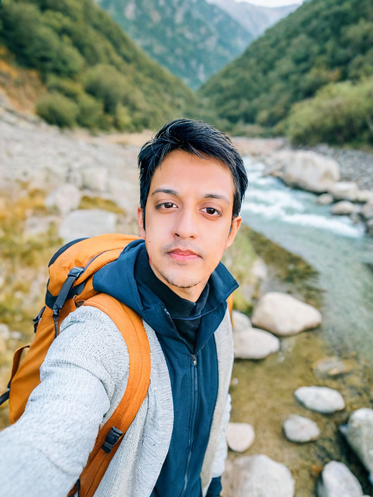

Who

I am deeply passionate about advancing knowledge in Computer Science, with a particular focus on code quality and cyber security in the applications of Infrastructure, AI, Quantum Computing and Robotics. My research centers on the automation of infrastructure configuration and securing production deployments, and I hold a deep appreciation for creativity and innovation across software, hardware, and the algorithmic arts.
Beyond my research, I'm an avid gamer who enjoys the strategic depth of Dota 2, the tactical realism of Arma 3, and the immersive storytelling of Assassin's Creed. I'm also passionate about tabletop gaming, particularly Warhammer 40K, where strategy meets craftsmanship. When I'm not at my desk, you'll find me exploring new places and cultures as travel fuels my curiosity and broadens my perspective on the world.
Research Principles
Research
I'm passionate about staying abreast with the latest in technology, particularly through publications, conferences, and CTF competitions.
Design
Design serves as a bridge between explored concepts and innovation, transforming theoretical insights into tangible innovations.
Implementation
Technology possesses the transformative ability to reshape lives, and I aspire to keep pace with the latest advancements.